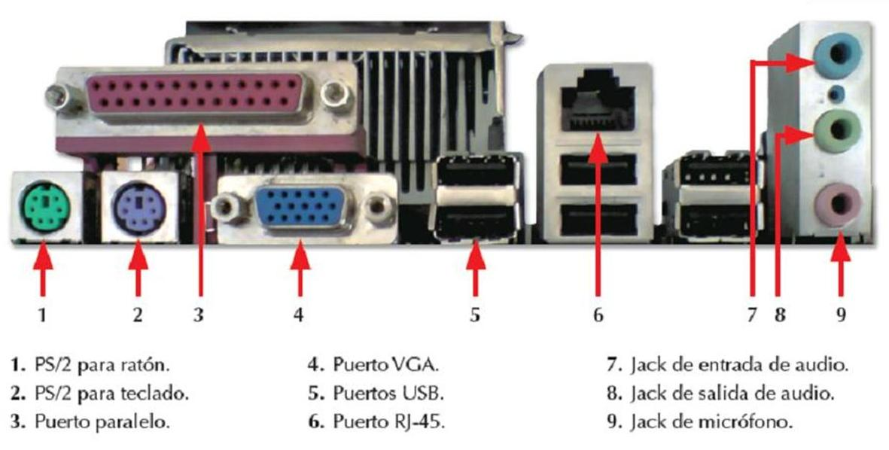

Durante cualquier período o instante, el procesador puede comunicarse con uno
o más dispositivos externos (en rigor, con uno o más módulos de
E/S) de manera impredecible, dependiendo de las necesidades de E/S de los
programas que están ejecutando. Los recursos internos, como la memoria
docsity.como el bus del sistema, deben ser compartidos entre un número de
actividades incluyendo a la E/S de datos. Luego, la función de E/S debe
incluir un requerimiento de control y temporización, para coordinar el
flujo del tráfico de datos y señales entre los recursos internos
y los dispositivos externos. Por ejemplo, el controlar la transferencia de
datos desde un dispositivo externo y el procesador, puede incluir los siguientes pasos:
1. El procesador interroga al módulo de E/S para verificar
el estado (status) del dispositivo conectado.
2. El módulo de E/S devuelve el estado del dispositivo.
3. Si el dispositivo está operable y listo para transmitir,
el procesador solicita la transferencia de datos, por medio de un
comando al módulo de E/S.
4. El módulo de E/S obtiene una unidad de datos del
dispositivo externo.
5. Los datos son transferidos desde el módulo
de E/S al procesador
El simplificado escenario precedente también ilustra que el
módulo de E/S debe tener la capacidad de ocuparse de la comunicación
con el procesador y el dispositivo externo. La comunicación con el
procesador incluye:
Decodificación del comando: El módulo de E/S acepta comandos desde
el procesador. Estos comandos generalmente son enviados como señales a través
del bus de control
Datos: Los datos son intercambiados entre el procesador y
el módulo de E/S a través del bus de datos.
Informe de Estados: Las señales de estados más
comunes son BUSY y READY. Puede haber también
señales para informar varias condiciones de error
Reconocimiento de direcciones: De la misma forma que
cada palabra en la memoria tiene una dirección,
también la tiene cada dispositivo de E/S
En consecuencia, un módulo de E/S debe reconocer
la dirección única asociada a cada periférico
que controla. * Comunicación con el dispositivo. El modulo de
E/S debera hacer de buffer para equiparar las transferencias de datos
a distintas velocidades y también es responsable de la detección
de errores e informar al procesador de dichos errores.
Un módulo de E/S que carga con la mayoría de los detalles
del procesamiento, presentando una interfase de alto nivel a la CPU,
se conoce normalmente como un canal o un procesador de E/S. Un módulo
de E/S que es bastante primitivo y requiere un control detallado, se conoce
comúnmente como un controlador de E/S o un controlador de dispositivo.
